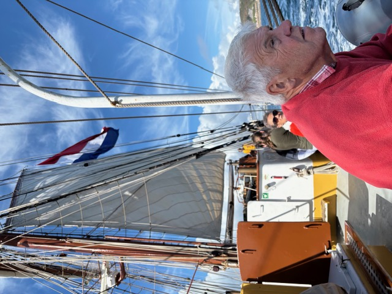

Hello & Welcome 👋

Welcome to my personal corner of the web! This site serves as my digital notebook and showcase for my personal projects, hobbies, and interests.
Quick Note: Select any topic from the navigation bar above to explore my notes, logs, and resources.
Explore what I'm currently tracking:
🎸 Bass Riffs
⚽ Fantasy Stats
🚴♂️ Cycling Classics
🌳 Geneology
🌱 Plant Logs
🥾 Trail Maps